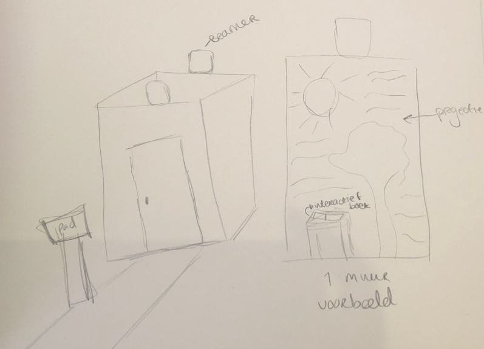

Opdracht
Introductie
Om echt de aandacht te trekken bij mensen, zijn Playful Interfaces ideaal. Op deze manier worden hedendaagse dingen omgetoverd tot iets wat anders is, wat de aandacht trekt en wat voornamelijk leuk is om te gebruiken. Voor het onderwerp Playful Interfaces heb ik 3 opdrachten gemaakt, deze zijn hieronder te zien.
Concept
Voor de eerste opdracht heb ik een nieuw concept bedacht, om sociale Playful Interfaces te gebruiken en positief gedrag te motiveren binnen de Haagse Hogeschool. Hiervoor heb ik een spel bedacht, waarmee studenten uit NL en het buitenland op een leuke manier elkaar leren kennen.
Het concept is een interactief museum in de school. Voordat de studenten het museum instappen, kiezen ze op een tablet wat voor museum hen interesseert en wat zij graag zouden willen zien. Aan de hand van de resultaten worden er groepen gemaakt binnen de studenten en elke groep mag een voor een het museum bezoeken. Het museum wordt dan door middel van projectoren ‘ingericht’ en kan dus veranderd worden per onderwerp. In het museum wordt informatie gegeven over het onderwerp, afbeeldingen en video’s weergegeven en worden er vragen gesteld. Deze vragen kunnen de studenten onderling aan elkaar vragen om elkaar zo beter te leren kennen. De grootte van het museum bepaalt wat er allemaal weergegeven kan worden. Het museum is een ruimte van vier muren waarop de inrichting geprojecteerd wordt op de muren.
Het museum ‘spel’ kan dan zowel individueel of in groepsvorm uitgevoerd worden. Uiteindelijk past het museum bij de interesses van de studenten die op dat moment aanwezig zijn, en daarop zijn de mogelijke aanpassingen dan ook gericht. Dus wat er in het museum gebeurt en gespeelt wordt kan zowel coöperatief als competitief zijn, het hoofddoel van het museum is dat de studenten coöperatief bezig zijn. Maar in het museum zijn er spellen die zowel coöperatief als competitief zijn. De spellen kunnen zowel parallel als onderling afhankelijk zijn en kunnen dan vergelijkende, kopiërende en/of gedeelde ruimte bevatten als functie. Door het mogelijk ruimtegebrek worden spellen passend bedacht en ontworpen.
Doordat de inrichting van het museum geprojecteerd wordt, kan het gemakkelijk interactief gemaakt worden door bepaalde sensoren. Er kunnen dus ook spellen toegevoegd worden of door middel van ‘swipe’ bewegingen met de armen kan bijv. de inrichting aangepast worden of kan er gescrold worden door een galerij met foto’s en video’s.
De kamer bestaat uit vier witte muren en mogelijk een soort plafond. Omdat er in school niet veel ruimte is, is het het beste als de muren op wielen geplaats worden, zodat het museum snel verplaats kan worden en makkelijk in en uit elkaar gehaald kan worden. Door middel van ‘spatial augmented reality’ wordt er een kamer ingericht die ervoor zorgt dat de kamer eruitziet als een museum dat past bij het gekozen onderwerp van de studenten. Daarnaast zorgt de ‘spatial AR’ ervoor dat de activiteiten binnen het museum interactief zijn en continu verandert kunnen worden, als het nodig is.
